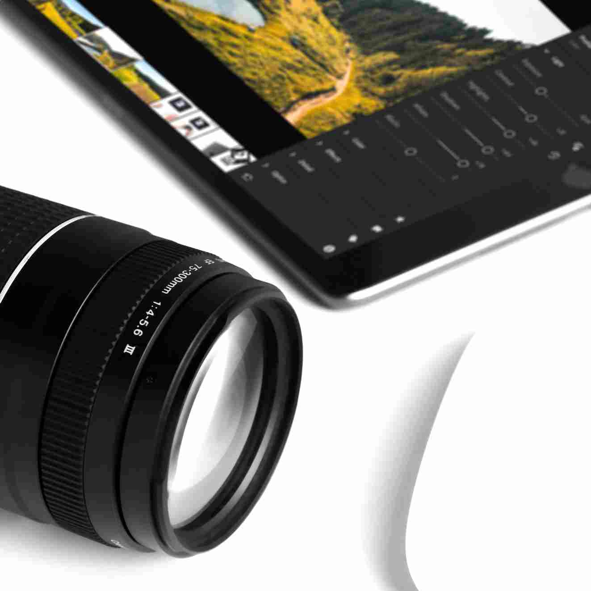

Dobar rezultat počinje puno prije nego što dron poleti.
Svaki projekt prolazi kroz pažljivo planiran proces koji nam omogućuje da
razumijemo vaše potrebe, pripremimo snimanje i ostvarimo najbolji mogući rezultat.
Sve počinje razgovorom. Želimo razumjeti što snimamo, kome je sadržaj namijenjen i što njime želite postići. Na temelju toga definiramo smjer projekta i pristup snimanju.
Analiziramo lokaciju, uvjete i mogućnosti snimanja. Planiramo kadrove, pokrete i vrijeme snimanja kako bismo iskoristili potencijal prostora i pronašli najbolju perspektivu.

Kada je sve spremno, ideja prelazi u kadar. Precizno i pažljivo snimamo materijal, prilagođavajući se lokaciji i uvjetima kako bismo dobili najbolje moguće rezultate.

Odabrani materijal pripremamo za njegovu konačnu namjenu. Rezultat su profesionalni vizuali spremni za dijeljenje, promociju i predstavljanje vašeg projekta.
